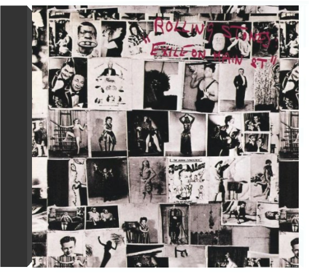
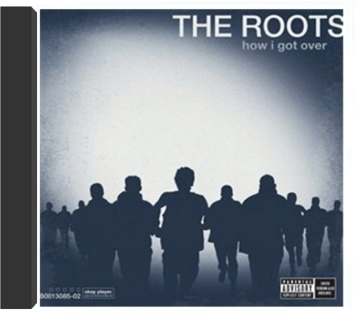
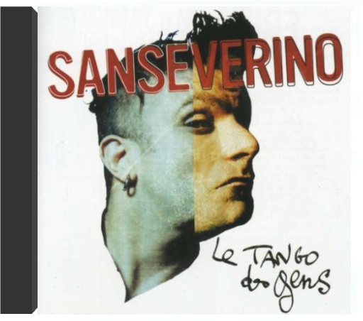
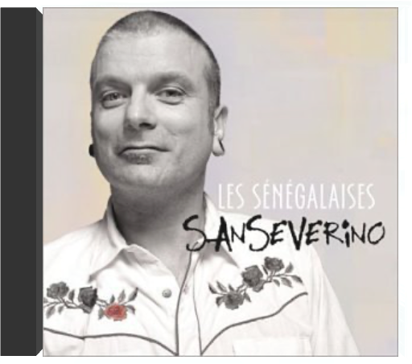

searching for sugar manrodriguez searching for sugar manrodriguez  1 - Sugar man exile on main streetthe rolling stones L'Amérique selon les Stones, recréée dans une cave sur la Côte d'Azur ! L'exil, c'est un peu la vie des Rolling Stones au début des années soixante-dix. Ils ont fui l'Angleterre pour des raisons fiscales et le guitariste Keith Richards, héroïnomane de réputation internationale, a tout intérêt à éviter les douaniers chatouilleux. Qu'à cela ne tienne, ses acolytes viennent enregistrer chez lui à Villefranche. Et c'est là, isolés, soudés par les circonstances dans un studio souterrain improvisé que les Stones vont recréer une Amérique de rêve, celle de leurs idoles et de leurs racines musicales : gospel ("Shine A Light" avec l'orgue de Billy Preston, "Just Wanna See His Face"), country blues ("Black Angel"), boogie ("Rip This Joint", "Turd On The Run"), country'n'western ("Sweet Virginia"), soul ("Let It Loose") et puis le rock, tout simplement avec trois classiques de taille : "Happy", chanté par Richards, "All Down The Line" et "Tumbling Dice". Les Stones sont en très grande forme, ils swinguent comme jamais, Richards surtout qui grave, ici, quelques-uns de ses meilleurs riffs. Happés plus tard par la jet-set et usés par les drogues, ils enregistreront encore de grands disques, mais celui-ci est leur dernier vrai chef-d'oeuvre. —Hubert Deshouse how I got overthe roots Long-awaited 2010 album from Hip Hop pioneers The Roots. The album, which takes its name from Clara Ward's Gospel classic, is the Roots' first new release since joining Late Night With Jimmy Fallon for a full time gig as the show's house band. Grammy Award winners the Roots characterize the songs on the album as "depicting the everyman's search for hope in this dispiriting post-hope zeitgeist". The lead single, "Dear God 2.0.", re-imagines the Monsters Of Folk song "Dear God" and features MOF members Yim Yames from My Morning Jacket, Conor Oberst and Mike Mogis from Bright Eyes and M. Ward. Also includes two appearances from Grammy-winning Soul man John Legend. Other guests on HIGO include Joanna Newsom, Blu, Peedi Peedi , Mercedes Martinez, Icelandic alt-pop singer Patty Crash, newcomer Sugar Tongue Slim as well as long time Roots' Crew members Dice Raw, Truck North and P.O.R.N.  roy lee johnson and the villagersroy lee johnson and the villagers roy lee johnson and the villagersroy lee johnson and the villagers 2017 vinyl reissue of unsung Stax label nugget from 1973. Veteran R&B singer & guitarist (of "Mister Moonlight" fame) with tight & funky young backing band recorded at Muscle Shoals studios  klrsaian supa crew klrsaian supa crew Six garçons issus de trois collectifs (Ofx, Simple Spirit et Eplicit Samuraï) ont mis en commun en 1997 leur savoir-faire afin de proposer leur version du hip-hop et secouer les productions monocordes françaises proposées jusqu'alors. "Le hip-hop tourne tant sur lui-même, en devient ouf, en manque de souffle, mec pousse toi j'étouffe" lance même Feniksi sur "Malade imaginaire". Les Saïan ne seraient-ils pas tout simplement le reflet de notre inconscience ? Toute l'essence du hip-hop se retrouve sur cet album, à savoir une diversité musicale : rap, ragga sur "Raggots", zouk, soul, etc., tout ça réalisé avec humour et beaucoup de feeling, le tout mélangé avec une dose de Human Beat Box. Marre du rap 93 (Seine-Saint-Denis) ou de son opposé 13 (Bouches-du-Rhône), vive le hip-hop pour tout le monde ! — Sébastien Prieto le tango des genssanseverino Avec ce premier album solo, Sanseverino (ex-leader-chanteur des Voleurs de poule) nous donne envie de mettre nos petites contrariétés au placard. Accompagné par le violon, l'accordéon et les cuivres rutilants, le banjo et la guitare acoustique de ce zigomar font virevolter des rythmes d'une chanson à l'autre. Ici pas de répit. On se laisse mener par le bout du nez vers un drôle d'univers où les clins d'œil (notamment à Brel et Bruant pour "Frida") succèdent à l'autodérision ("Swing du nul", "Mal ô mains"). Le tout servi dans des ambiances de joyeux bastringue. Parfois, ça sent le petit vin blanc, les guinguettes du dimanche ou les caf'conc enfumés du quartier Saint-Germain d'après-guerre. Et c'est sans compter la voix éraillée de cette gouaille malicieuse qui court sans retenue sur les accords d'un swing jazzifié façon Django Reinhardt ("Mal ô mains") ou ceux du folklore tzigane ("André"). Le sarcastique "Tango de l'ennui" de François Béranger version Sanseverino se fait l'écho du très mordant "Tango des gens" et mérite une écoute particulièrement attentive. Un album sans concession, dont on appréciera les nombreuses influences. —Valérie Dupouy les sénégalaisessanseverino Quelque enthousiaste qu'ait été l'accueil de son premier album, Sanseverino devait transformer l'essai. C'est chose faite avec Les Sénégalaises où son jazz manouche imprègne chaque accord. Une gouaille railleuse, un swing morveux, Sanseverino lâche la bride à sa verve humoristique, ironique et acerbe parfois ("La Cigarette", "Les Sénégalaises"). Sa bande et lui s’amusent comme une bande de sales gosses, secouent gaillardement les tempos, et balancent avec l'arrogance des petites frappes quelques couplets bien sentis ("André II"). Mais c'est d'abord une poésie des faubourgs à l'élégance rebelle qui est la marque de Sanseverino. Il trouve les mots les plus exacts pour pointer les "petites" hypocrisies sociales, et parvient avec habileté à dénoncer sans incantation un des maux les plus ravageurs et les plus insidieux ("La Cigarette"). Au passage, il envoie un coup de chapeau respectueux à Django et à Gainsbourg. Et l’on constate que Sanseverino est sans doute le disciple le plus brillant de ces deux-là. —José Ruiz  le zénith de gainsbourgserge gainsbourg le zénith de gainsbourgserge gainsbourg En mars 1988, Serge Gainsbourg occupait la scène du Zénith pour 12 concerts consécutifs. Dans un décor superbe, entouré de ses musiciens et choristes américains, il y revisitait, tour à tour émouvant et ému, Gainsbourg et Gainsbarre, trente ans de sa carrière. Il nous gratifiait alors de certains de ses plus anciens tubes ("Qui est in, qui est out", "Manon", "Couleur café"), de quelques extraits de ses deux albums new-yorkais ("You're Under Arrest", "Five easy pisseuses", "Harley David Son Of A Bitch", "Dispatch Box", "Gloomy Sunday"), d'une version solo de "Bonnie And Clyde", de sa version reggae de "La Marseillaise" ("Aux armes et caetera"), d'une reprise empruntée au répertoire de Jane Birkin (le sublime "Les Dessous chics") et de celle de "Mon légionnaire" créé par Edith Piaf. Sans oublier deux titres inédits, "Hey Man Amen" et "Seigneur et saigneur". Serge Gainsbourg avait 60 ans et recevait l'hommage triomphal d'un public aux générations mêlées, en réponse à une prestation scénique d'autant plus exceptionnelle qu'elle était la dernière. — Sylvie Devilette |


 Made with Delicious Library
Made with Delicious LibraryNancy, State zipflap congrotus delicious library Thomas, Julien